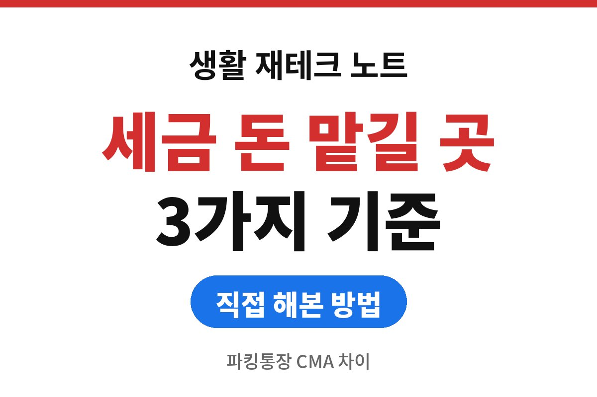
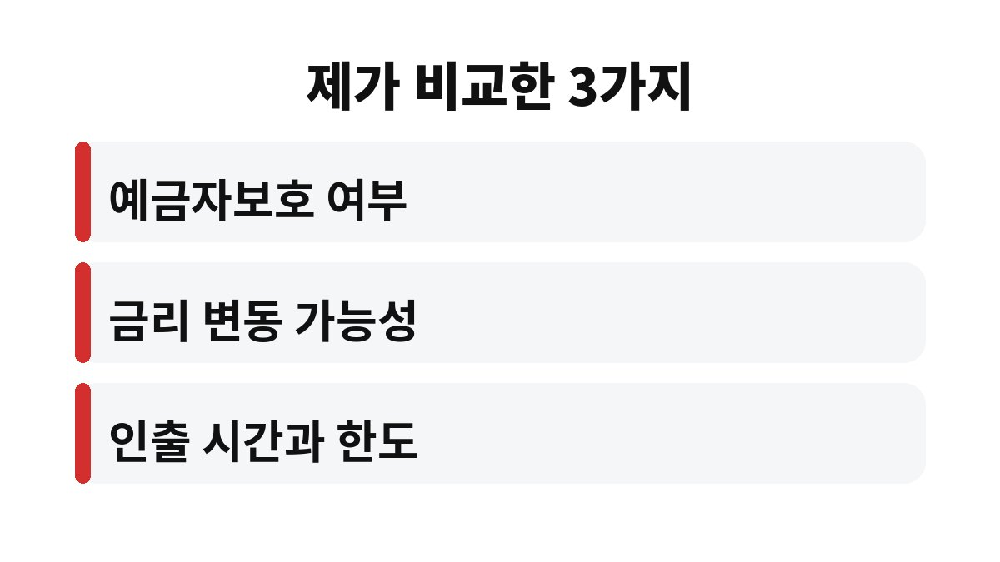
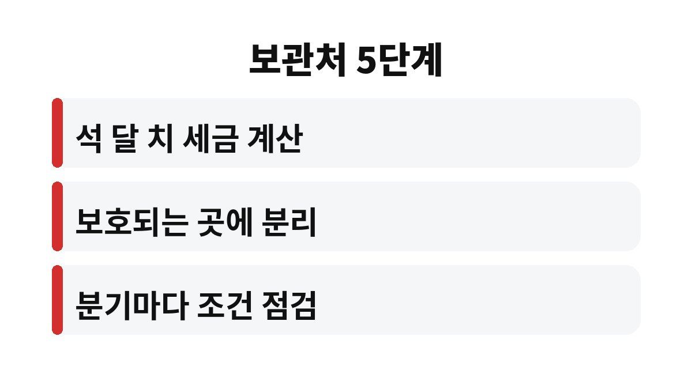

이 글은 부가세와 종합소득세로 나갈 돈을 잠시 맡겨 둘 곳을 찾으며 파킹통장과 CMA 사이에서 고민하는 분들을 위해 쓴 글입니다.
온라인 쇼핑몰을 운영하는 가장인 제가 두 상품을 구분한 기준을 적었습니다.
둘 다 하루만 맡겨도 이자가 붙는다는 말에 저는 처음에 같은 상품이라고 생각했습니다.
그런데 파킹통장은 은행 상품이고 CMA는 증권사 상품이라 구조부터 다릅니다.
이 차이를 모르고 맡기면 필요한 날 돈을 쓰지 못하거나 보호 여부를 놓칠 수 있습니다.
금리 숫자가 높은 쪽으로 옮기면 된다고 가볍게 생각했던 적이 있습니다.
하지만 세금 낼 돈은 불리는 돈이 아니라 반드시 제날짜에 꺼내야 하는 돈입니다.
그래서 금리보다 안전성과 인출 편의를 먼저 보기로 기준을 바꿨습니다.

은행 파킹통장은 예금자보호법에 따라 한도 안에서 보호를 받는 예금 상품입니다.
CMA는 유형에 따라 다르며, 예를 들어 RP형은 예금자보호 대상이 아니라고 안내됩니다.
유형별 보호 여부는 가입 전 상품 설명서에서 직접 확인해야 합니다.
두 상품 모두 금리가 수시로 바뀌므로 지금의 금리 차이를 기준으로 오래 두는 것은 위험하다고 판단했습니다.
인출은 대체로 쉬운 편이지만 증권사 상품은 이체 가능 시간과 한도가 다를 수 있어 확인이 필요합니다.
| 구분 | 파킹통장 | CMA |
|---|---|---|
| 운영 기관 | 은행 | 증권사 |
| 보호 여부 | 예금자보호 한도 내 보호 | 유형별로 다름 |
| 제 용도 | 세금 낼 돈 보관 | 여유 자금 단기 운용 |
이 표는 제가 용도를 나누려고 정리한 기준이며, 세부 조건은 상품마다 다릅니다.
특히 증권사 상품은 같은 CMA라는 이름이어도 유형이 여러 가지라 이름만 보고 판단하면 안 된다고 느꼈습니다.
가입 화면에서 유형 이름과 보호 여부 문구를 먼저 찾아보는 습관이 도움이 되었습니다.
또한 이자는 하루 단위로 계산되더라도 지급 시점이 상품마다 다르다는 점을 알게 되었습니다.
세금 납부일 직전에 이자가 들어오기를 기대하기보다 원금이 제날짜에 있는지가 훨씬 중요합니다.
저는 돈을 세 덩어리로 나누어 생각합니다.
첫째는 곧 나갈 세금과 고정비, 둘째는 갑자기 필요할 때 쓸 비상금, 셋째는 당장 쓸 일이 없는 여유 자금입니다.
첫째와 둘째는 필요한 날 틀림없이 꺼낼 수 있는 곳에 두고, 셋째만 금리 차이를 따져 봅니다.
이렇게 나누면 금리가 조금 바뀌어도 급하게 옮겨 다닐 이유가 없어집니다.
이제는 세금 낼 돈은 보호가 분명한 곳에 두고, 당장 쓸 일이 없는 여유 자금만 따로 나누어 둡니다.
금리가 조금 낮아도 필요한 날 문제없이 꺼내 쓸 수 있다는 안도감이 더 컸습니다.
돈에 용도별 이름표를 붙이니 고민하는 시간도 줄었습니다.
예전에는 금리 비교 글을 읽느라 시간을 쓰고도 결정을 못 했는데, 지금은 용도부터 정하니 선택지가 자연스럽게 좁혀집니다.
남는 돈이 생겼을 때 어디에 둘지 바로 정할 수 있다는 점도 큰 변화입니다.
결국 상품의 우열을 가리는 일보다 내 돈의 쓰임새를 먼저 정하는 일이 순서상 앞선다는 것을 배웠습니다.
이 기준은 제 사업 상황에서 정한 것이므로 독자님의 상황에 맞게 조금씩 바꿔 쓰시면 됩니다.

1. 앞으로 석 달 안에 나갈 세금과 고정비를 먼저 계산합니다.
2. 그 금액은 보호 여부가 분명한 상품에 따로 둡니다.
3. 증권사 상품은 유형별 보호 여부를 설명서에서 확인합니다.
4. 이체 가능 시간과 한도를 미리 확인합니다.
5. 분기마다 금리와 조건이 바뀌었는지 점검합니다.
함께 읽으면 좋은 글: 종합소득세 경비 증빙, 3만 원 넘는 영수증 놓쳐 후회했던 셀러가 바꾼 5가지 습관
파킹통장과 CMA는 어느 쪽이 낫다기보다 돈의 용도에 따라 나누어 쓰는 상품이라고 저는 정리했습니다.
세금 낼 돈은 안전성을, 여유 자금은 금리를 먼저 보시길 바랍니다.
※ 본 글은 2026년 기준 개인 경험을 바탕으로 한 정보이며, 세금·금융 상품 선택은 본인 상황에 맞게 전문가와 확인하시길 바랍니다.